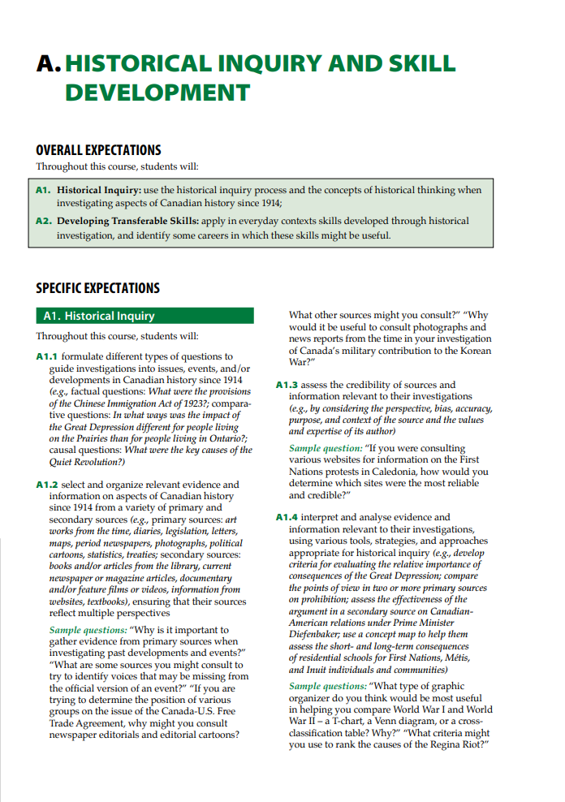

StoryMapJS
StoryMapJS is a free, open-source tool from Knight Lab that allows users to tell stories on the web highlighting the locations of a series of events.

Tool Explanation and Functionality in a History Classroom
StoryMapJS is an interactive digital mapping tool that enables educators and their students to explore historical events and processes as a location narrative timeline. It creates a visual interactive journey where each event is connected into a larger story. Users can use a variety of map databases included on the website (or even upload a custom map) to customize the appearance of their chosen region and time period. After selection, users form a chronological string of visual pinpoints across a geographic area, each containing a location slide that contains images, text, social media posts, websites, articles, music, and/or videos to explain the significance of that point in space and time. It is a highly functional tool for a history course like World History since the Fifteenth Century, Grade 12 (CHY4U), as it allows for both large-scale and human-centered historical processes to be visualized as an interactive journey (A1, A2). It should be noted that while the tool is free to use, users require internet connection, a google account, and a computer for map creation. In addition to these requirements, teachers will need a projector and adequate surface for displaying StoryMaps in the classroom. See the video below for an example below of the tool in action.
Pedagogical Rationale and Curriculum alignment to CHY4U
In considering pedagogical rationale, the tool is advantageous due to its user-friendly interface, and thus would not require intensive training for students to use. Creating a map is intuitive and simple, as can be seen in the accompanying screenshot showing the start of a StoryMap I created to map the French Revolution/Napoleonic era.
Teaching Examples and Context Application
StoryMapsJS can be used across multiple teaching contexts and subjects. Delivered live in a classroom, clicking through a StoryMap becomes a shared experience where educators and students go on a journey together. Asynchronously, students are given the opportunity to experience the journey at their own pace, which may encourage reflection and increase understanding (Gosavi, 2025, pp. 276-277). The tool would be especially useful for teachers when summarizing large-scale processes where students may otherwise get confused with the overwhelming amount and dates and individual events. As a narrative tool, there is an opportunity to use StoryMaps for an examination of human-centered history. While teaching about the French Revolution, for instance, the map can show the real implications of political violence on non-combatants by highlighting accounts and stories of specific people/groups devastated by the war and political upheaval (D1).
Tasking students with creating their own maps would elevate the experience further. An assignment of this type would best be suited as an end-of-unit (or even end-of-course) culminating activity. With a course like World History (CHY4U), over 500 years of events and processes are being examined. Asking students to pick historical processes that specifically interest them and make their own StoryMaps should result in a more engaging process wherein they demonstrate their understanding of how historical trends are formed through individual instances (A1, A2). Another strength of the tool is that it can be worked on collaboratively, allowing multiple users to access and create maps simultaneously. The task would result in a diverse group of products that can be evaluated by the teacher and then shared with the whole class, allowing students to learn from each other and review before a test/exam.
Outside of history, this tool would be a fantastic addition to geography classrooms (as the example video shows) and even for subjects like English, where educators/students could upload a map of a setting from a book or play and use the tool to visualize and connect the plot elements spatially. It is a highly versatile tool that can be used across subjects and grade-levels.
References
Gosavi, C. S. (2025). E-learning adoption model: A literature review. In C. Gosavi (Ed.), Interactive media with next-gen technologies and their usability evaluation (pp. 275-295). CRC Press.
Hennessy, A., & Murphy, K. (2025). Barriers to student engagement: A focus group study on student engagement of first-year computing students. Irish Educational Studies, 44(1), 183–200.